농기계정비기능사 (2012-02-12 기출문제)
1과목: 농기계정비
1. 저항 R1, R2, R3를 직렬로 연결시킬 때 합성저항은?
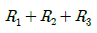
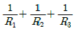
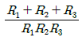
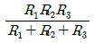
(정답률: 79%)

2. 다음 중 축전지에 관한 설명으로 틀린 것은?
- 납축전지를 많이 사용한다.
- 축전지의 음극은 차체에 접지되어 있다.
- 점화장치의 2차 회로에 전기에너지를 공급한다.
- 화학 작용에 의하여 화학에너지를 전기에너지로 전환시킨다.
(정답률: 62%)
3. 옴의 법칙으로 옳은 것은?(단, R : 저항, I : 전류, E : 전압)
- R=IE
- E=IR
- E=IR2
- I=RE
(정답률: 79%)
4. 납축전지의 충·방전시 발생되는 현상이 아닌 것은?
- 충·방전시 화학 반응은 비가역적이다.
- 셀의 기전력은 약 2[V] 정도이다.
- 충전으로 황산의 농도가 증가한다.
- 기전력은 황산의 농도에 따라 달라진다.
(정답률: 57%)
5. 모든 유형의 전조등 빔을 조정할 때 사용되는 것은?
- 연결가닥
- 조준받침
- 필라멘트
- 앵커
(정답률: 69%)
6. 충전용 발전기의 자속 밀도가 20[Wb/m2], 도체의 길이가 120[cm]이며 자장과 직각으로 이동하는 도체의 속도가 1.5[m/s]라면 이 발전기에 유기되는 전압은? (단, 발전기의 효율은 100[%]라고 한다.)
- 36[V]
- 40[V]
- 46[V]
- 54[V]
(정답률: 48%)
7. 납축전지에서 전해액이 자연 감소되었을 때 보충액으로 가장 적합한 것은?
- 묽은 황산
- 묽은 염산
- 증류수
- 수돗물
(정답률: 85%)
8. 다음 중 농업용 트랙터에서 전기회로가 주로 접지되는 곳은?
- 프레임
- 엔진
- 뒤 차축
- 발전기
(정답률: 82%)
9. 전류의 발열작용을 응용한 기기가 아닌 것은?
- 전기히터
- 전기인두
- 냉장고
- 전기다리미
(정답률: 88%)
10. 축전지 터미널의 부식을 방지하기 위해 사용되는 것은?
- 그리스(Grease)
- 기어오일(Gear oil)
- 엔진오일(Engine oil)
- 페인트(Paint)
(정답률: 84%)
11. 다음 중 점화코일을 시험할 때 점화코일의 알맞은 온도는?
- 25℃
- 50℃
- 80℃
- 1⑤℃
(정답률: 65%)
12. 가솔린 기관에서 점화시기 조정과 관계없는 것은?
- 기관의 회전 속도
- 기관의 부하
- 옥탄가
- 세탄가
(정답률: 62%)
13. 다음 중 전조등의 조도가 부족한 원인이 아닌 것은?
- 축전지의 방전
- 장기사용에 의한 전구의 열화
- 접지의 불량
- 굵은 배선 사용
(정답률: 81%)
14. 교류 220[V], 60[Hz] 전원에 2[kW], 극수 2, 슬립 8[%]의 전동기를 운전할 때 분당 축의 회전수는?
- 2312[rpm]
- 3312[rpm]
- 3512[rpm]
- 3600[rpm]
(정답률: 48%)
15. 다음 중 콘덴서의 절연도를 측정할 수 있는 시험으로 적합한 것은?
- 용량시험
- 누설시험
- 고주파시험
- 직렬시험
(정답률: 58%)
16. 농용트랙터에서 조향핸들의 유격을 조정하는 방법은?
- 드래그 링크를 풀고 좌우로 돌려 조정한다.
- 피트만 암의 길이를 조정한다.
- 스티어링 기어박스의 고정너트를 풀고 조정한다.
- 타이로드로 조정한다.
(정답률: 54%)
17. 동력 분무기 노즐의 배출량이 30L/min, 노즐의 유효 살포폭이 10m, 10a 당 살포량이 167L/10a 일 경우 노즐의 살포작업 속도는?
- 0.1 m/s
- 0.2 m/s
- 0.3 m/s
- 0.4 m/s
(정답률: 44%)
18. 동력 경운기에 쟁기를 장착할 때 하차와 감압볼트의 거리를 얼마로 조정해야 직진성이 좋아지는가?
- 5 ~ 6mm
- 3 ~ 4mm
- 1 ~ 1.5mm
- 2 ~ 3mm
(정답률: 44%)
19. 동력 이앙기에서 유압 장치가 작동되지 않을 때의 점검사항과 관계가 없는 것은?
- 유압 케이블 레버의 점검
- 유압 펌프의 점검
- 체인 케이스의 점검
- 센서 로드의 점검
(정답률: 77%)
20. 함수율과 관련된 설명 중 틀린 것은?
- 함수율표시법에는 습량기준함수율과 건량기준함수율이 있다.
- 습량기준함수율이란 물질 내에 포함되어 있는 수분을 그 물질의 총무게로 나누 값을 백분율로 표현한 것이다.
- 어떤 물질의 함수율이 증가되고 있다는 것은 그 물질내의 수분함량이 감소된다고 말할 수 있다.
- 함수율을 측정하는 방법으로는 오븐법, 증류법, 전기저항법, 유전법 등을 사용한다.
(정답률: 80%)
2과목: 농기계전기
21. 다음 중 관리기의 주 클러치의 형식은?
- 건식단판식원판 마찰클러치
- V벨트 클러치
- 건식다판식원판 마찰클러치
- 원뿔 마찰클러치
(정답률: 73%)
22. 자탈형 콤바인의 주요 장치가 아닌 것은?
- 반송장치
- 식부장치
- 탈곡장치
- 선별장치
(정답률: 54%)
23. 기관의 밸브의 점검 항목이 아닌 것은?
- 밸브의 크기
- 면의 접촉 상태
- 마멸 및 소손
- 밸브 마진 두께
(정답률: 86%)
24. 트랙터가 습지에서 한쪽 바퀴가 슬립(slip)할 때 사용하는 장치는?
- 독립 PTO
- 차동장치
- 차동 잠금장치
- 최종 감속장치
(정답률: 58%)
25. 동력경운기 차축에 설치된 허브 오일시일을 자주 교환하는 이유가 아닌 것은?
- 차축의 휨이 클 때
- 허브베어링이 마모되었을 때
- 오일시일 립 접촉부가 마모되었을 때
- 최종구동케이스 덮개 가스킷이 불량할 때
(정답률: 56%)
26. 기관의 냉각장치에서 라디에이터 내부 압력이 대기압보다 낮게 되면 열리는 라디에이터 캡의 밸브는?
- 서모스탯
- 압력
- 진공
- 바이패스
(정답률: 55%)
27. 동력경운기의 주 클러치 스프링의 점검사항이 아닌것은?
- 직각도
- 자유고
- 인장도
- 장력
(정답률: 64%)
28. 트랙터 유압장치 중 위치제어 레버와 견인력제어 레버에 대한 설명 중 옳은 것은?
- 위치제어 레버는 쟁기 작업, 견인력제어 레버는 로터리 작업에 주로 사용한다.
- 위치제어 레버는 작업기의 속도제어, 견인력제어 레버는 작업기의 상승 및 하강 제어에 사용한다.
- 위치제어 레버는 작업기의 부하제어, 견인력제어 레버는 작업기의 상승 및 하강 제어에 사용한다.
- 위치제어 레버는 로터리 작업, 견인력제어 레버는 쟁기작업에 주로 사용한다.
(정답률: 78%)
29. 기관분해 조립 시 피스톤 링을 끼울 때만 사용하는 공구는?
- 리지 리머
- 피스톤링 콤프레셔
- 프라스틱 해머
- 피스톤링 익스팬더
(정답률: 78%)
30. 제동장치에서 작동된 브레이크 슈를 안전한 공극으로 유지하도록 복원시켜주는 장치는?
- 앵커 플레이트
- 어저스터 캠
- 리턴 스프링
- 라이닝
(정답률: 83%)
31. 다음 보기에서 가솔린 기관에만 설치된 부품을 모두 선택한 것은?
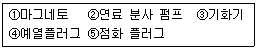
- ①, ②, ③
- ①, ③, ⑤
- ②, ③, ④
- ②, ③, ⑤
(정답률: 59%)
32. 기어식 변속기의 물림속도비 구하는 공식은?
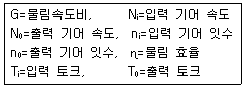
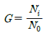
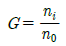
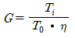
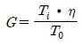
(정답률: 54%)
33. 동력경운기 조향 클러치의 가장 적당한 유격은?
- 1.0 ~ 2.0mm
- 3.0 ~ 4.0mm
- 4.0 ~ 5.0mm
- 5.0 ~ 6.0mm
(정답률: 67%)
34. 전동기의 명판에 표시하여야 할 사항으로 맞지 않는 것은?
- 권선저항
- 정격전압
- 사용전원의 상수
- 회전속도
(정답률: 49%)
35. 동력경운기에서 주행 중 변속기어가 빠지는 원인이 아닌 것은?
- 록킹볼 및 스프링 마모
- 각 기어의 마모
- 변속포크 불량
- 시프트 레일의 힘
(정답률: 64%)
36. 행정의 길이가 120mm, 기관회전수가 2000rpm인 4행정기관이 피스톤 평균속도는?
- 24m/s
- 16m/s
- 12m/s
- 8m/s
(정답률: 24%)
37. 트랙터용 로터리 정비에 대한 설명으로 틀린 것은?
- 로터리의 날은 C자형 날과 L자형 날 등으로 구분된다.
- 로터리의 날 조립 시 볼트는 일반볼트(강도:4T)를 사용한다.
- 스키드는 알맞은 경심을 유지하는 역할을 하므로 마모시 교환한다.
- 기어박스에서 소음발생 시 작업을 멈추고 우선 기어오일을 확인한다.
(정답률: 60%)
38. 디젤기관의 직접분사식은 연소실에 직접 분사하는 형식으로 연료분사압력은 보통 얼마인가?
- 50 ~ 100kgf/cm2
- 100 ~ 150kgf/cm2
- 150 ~ 200kgf/cm2
- 200 ~ 300kgf/cm2
(정답률: 37%)
39. 기관에서 점화 플러그의 간극은 보통 얼마인가?
- 0.6 ~ 0.9mm
- 0.1 ~ 0.5mm
- 1.1 ~ 1.4mm
- 1.5 ~ 1.8mm
(정답률: 54%)
40. 동력경운기에서 브레이크가 작동되는 순서로 알맞은 것은?
- 주클러치레버 당김→주클러치 로드→연결봉→브레이크 레버→브레이크 캠축의 회전→브레이크링 확장→제동
- 주클러치레버 당김→브레이크링 확장→브레이크 레버→브레이크 캠축의 회전→연결봉→주클러치 로드→제동
- 주클러치레버 당김→주클러치 로드→브레이크링 확장→브레이크 레버→연결봉→브레이크 캠축의 회전→제동
- 주클러치레버 당김→브레이크 레버→연결봉→주클러치 로드→브레이크링 확장→브레이크 캠축의 회전→제동
(정답률: 72%)
3과목: 농기계안전관리
41. 농용 트랙터 3점 히치는 동력 취출축의 출력에 따라 4개의 카테고리로 구분이 되고, 각 카테고리는 모양은 같고, 크기에 따라 구별되는데, 동력취출축 출력이 51kW(70PS)는 카테고리 몇 번인가?
- Ⅰ
- Ⅱ
- Ⅲ
- Ⅳ
(정답률: 65%)
42. 트랙터 장치 가운데 로터베이터, 모어, 베일러, 양수기 등 구동형 작업기에 동력을 전달하기 위한 장치는?
- 차동장치
- 토크컨버터
- 동력취출축
- 클러치
(정답률: 78%)
43. 동력행정 때 얻은 운동에너지를 저장하여 각 행정때 공급하여 회전을 원활하게 하는 것은?
- 클러치면판
- 플라이휠
- 저속기어
- 클러치압력판
(정답률: 81%)
44. 기관에서 윤활유 소비가 과대한 원인에 해당되는 것은?
- 피스톤링의 마멸
- 라디에이터의 기능약화
- 기관의 과열
- 조기점화
(정답률: 73%)
45. 트랙터를 이용한 땅속작물수확기를 선정하기 위해 필요한 사항이 아닌 것은?
- 수확하고자 하는 작물의 종류를 알아야 한다.
- 이랑의 폭을 알아야 한다.
- 트랙터의 마력을 알아야 한다.
- 운반거리를 알아야 한다.
(정답률: 81%)
46. 사내 안전규정에 따라 해당 책임자가 일정 시간마다 정기적으로 실시하는 안전점검은?
- 임시점검
- 수시점검
- 특별점검
- 정기점검
(정답률: 83%)
47. 안전의 계획에서 실시에 이르기까지 모든 것을 생산계통에 따라서 시달되어 안전에 대한 지시 및 전달이 신속·정확하여 소규모기업에서 활용되는 조직은?
- 직계식 조직
- 참모식 조직
- 직계·참모식 조직
- 병열식 조직
(정답률: 77%)
48. 아세틸렌 접촉부분에 구리의 함유량이 70%이상의 구리합금을 사용하면 안되는 이유는?
- 아세틸렌이 부식되므로
- 아세틸렌이 구리를 부식시키므로
- 폭발성이 있는 화합물을 생성하므로
- 구리가 가열되므로
(정답률: 52%)
49. 다음 중 안전관리의 목적으로 가장 거리가 먼 것은?
- 인명의 존중
- 사회복지의 증진
- 공업의 발전
- 생산성의 향상
(정답률: 59%)
50. 전기아크용접 시 적절한 보호구를 모두 고른 것은?
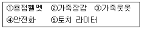
- ①,②,⑤
- ①,②,③
- ②,③,④,⑤
- ①,②,③,④
(정답률: 86%)
51. 동력경운기의 엔진 풀리와 주클러치에 V벨트를 걸때 옳은 방법은?
- 엔진이 정지된 상태에서 건다.
- 엔진이 저속으로 회전하는 상태에서 건다.
- 주클러치 레버로 동력을 단속하고 건다.
- 주클러치 레버를 브레이크 상태까지 잡아당긴 후 건다.
(정답률: 82%)
52. 전기드릴을 사용할 때 잘못된 작업방법은?
- 드릴의 착탈은 회전이 완전히 멈춘 다음 행한다.
- 균열이 있는 드릴은 사용하지 않는다.
- 작업 중 쇳가루는 불면서 작업한다.
- 구멍을 맨 처음 뚫을 때는 힘을 줄여 천천히 뚫는 다.
(정답률: 92%)
53. 안전·보건표지의 색체에 따른 용도가 잘못 짝지어진 것은?
- 녹색 - 안내
- 노란색 - 경고
- 검은색 - 지시
- 빨간색 - 금지
(정답률: 84%)
54. 작업기의 이동 및 운전상의 주의사항 중 틀린 것은?
- 농로의 진입 시 고저차이가 작은 곳을 고른다.
- 자탈형콤바인을 운반차로 내릴 경우에는 사다리를 이용해서 15°이내의 경사로 한다.
- 등판시에는 전진으로, 내려갈 길은 후퇴로, 저속으로 주행하는 것이 원칙이다.
- 전륜의 분담력을 높여 핸들의 저항과 중량감을 증가시킨다.
(정답률: 85%)
55. 다음 중 유류 화재에 해당하는 것은?
- A급 화재
- B급 화재
- C급 화재
- D급 화재
(정답률: 81%)
56. 하인리히의 안전사고 예방대책 5단계에 해당되지않는 것은?
- 분석
- 적용
- 조직
- 환경
(정답률: 65%)
57. 동력경운기의 작업별 사고빈도가 가장 높은 작업은?
- 양수 작업
- 방제 작업
- 운반 작업
- 경운 작업
(정답률: 72%)
58. 실린더 헤드 볼트를 조일 때 마지막으로 사용하는 공구는?
- 토크렌치
- 소켓렌치
- 오픈엔드렌치(스패너)
- 조정렌치(몽키)
(정답률: 82%)
59. 스패너나 렌치작업으로 올바르지 못한 것은?
- 스패너 사용은 앞으로 당겨 사용한다.
- 큰 힘이 요구될 때 렌치자루에 파이프를 끼워 사용한다.
- 파이프 렌치는 둥근 물체에 사용한다.
- 너트에 꼭 맞는 것을 사용한다.
(정답률: 84%)
60. 전기 화재를 일으키는 원인 중 비중이 가장 큰 것은?
- 과 전류
- 단락(합선)
- 지락
- 절연불량
(정답률: 79%)